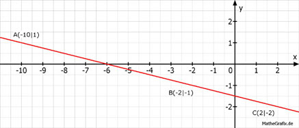

Lineare Funktionen Aufgabe 70 Liegen die Punkte A(-10|1), B(-2|-1) und C(2|-2) auf einer Geraden? Gerade zwischen A und B: A(-10|1) x1 y1 B(-2|-1) x2 y2 -1 - 1 -2 1 m = ----------- = ---- = - --- = - 0,25 -2 - (-10) 8 4 -1 = - 0,25 * (-2) + b | -0,5 b = -1,5 y = - 0,25 * x - 1,5 Gerade zwischen B und C: B(-2|-1) x1 y1 C(2|-2) x2 y2 -2 - (-1) -1 1 m = ----------- = ----- = - --- = - 0,25 2 - (-2) 4 4 -2 = - 0,25 * 2 + b | +0,5 b = -1,5 y = - 0,25 * x - 1,5 oder man überprüft, ob der Punkt C auf der Geraden AB liegt. -2 = - 0,25 * 2 - 1,5 = -2 --> C liegt auf AB. Ja, sie liegen auf einer Geraden. 